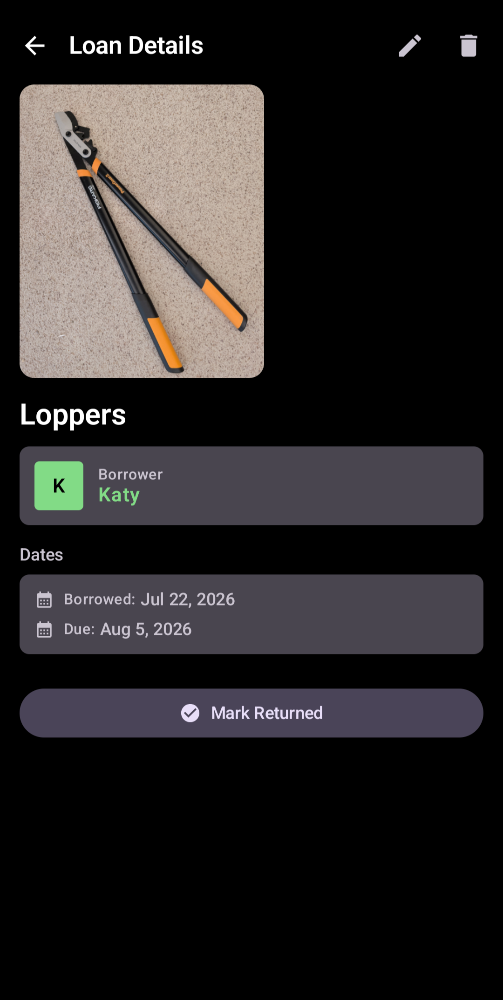
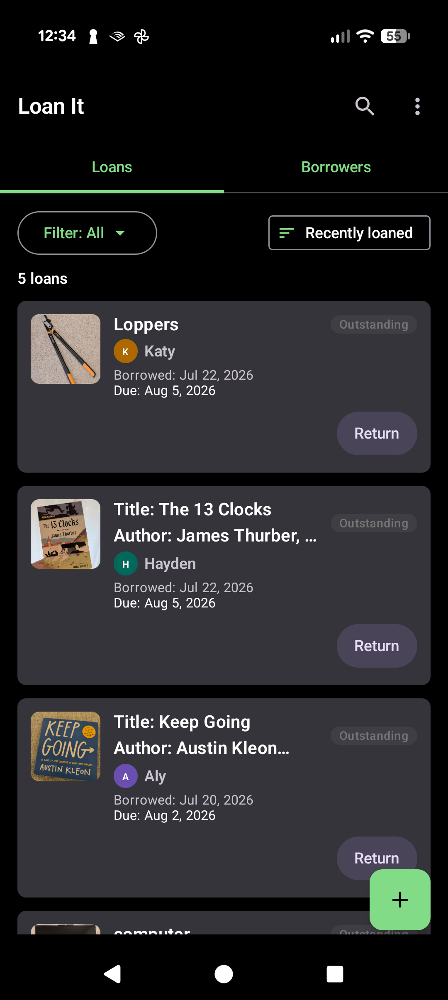
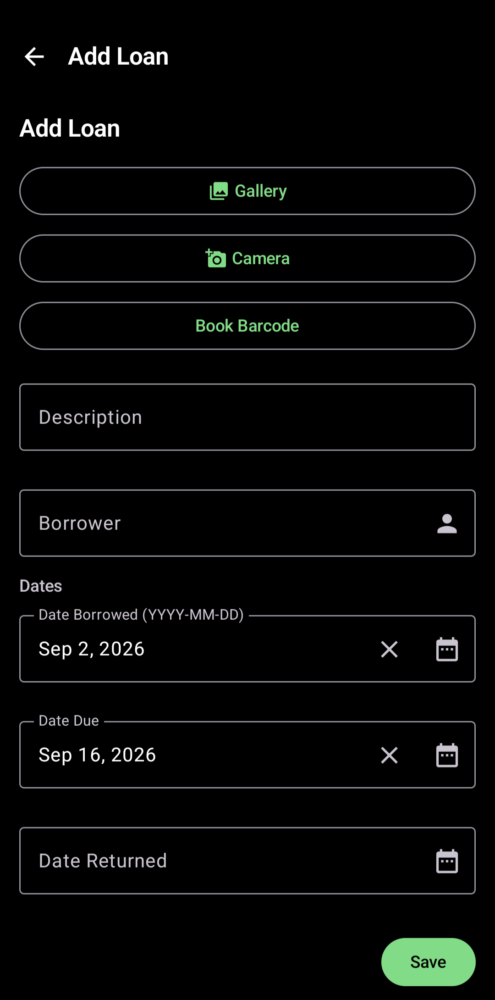
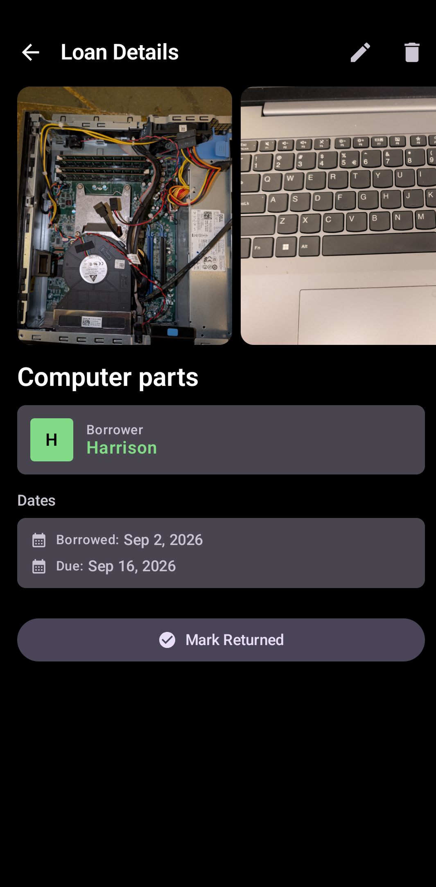
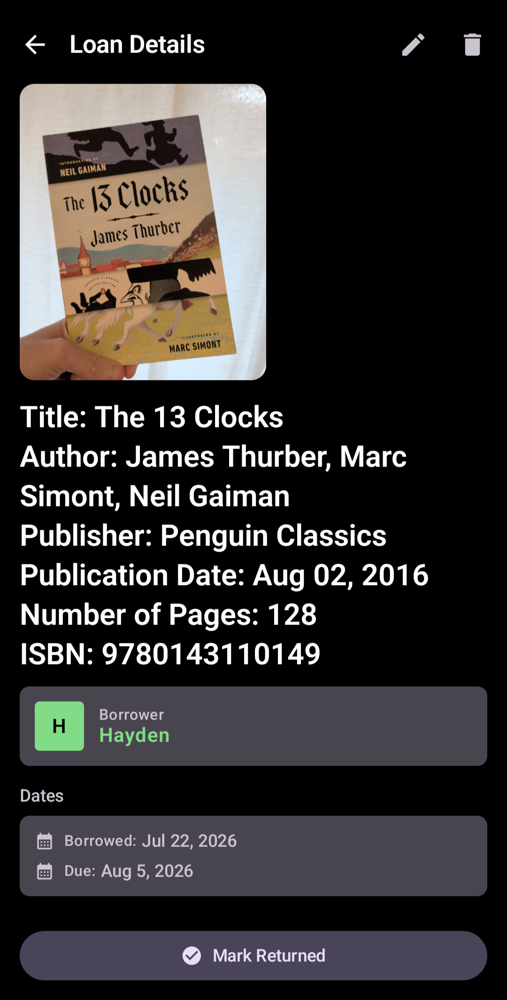
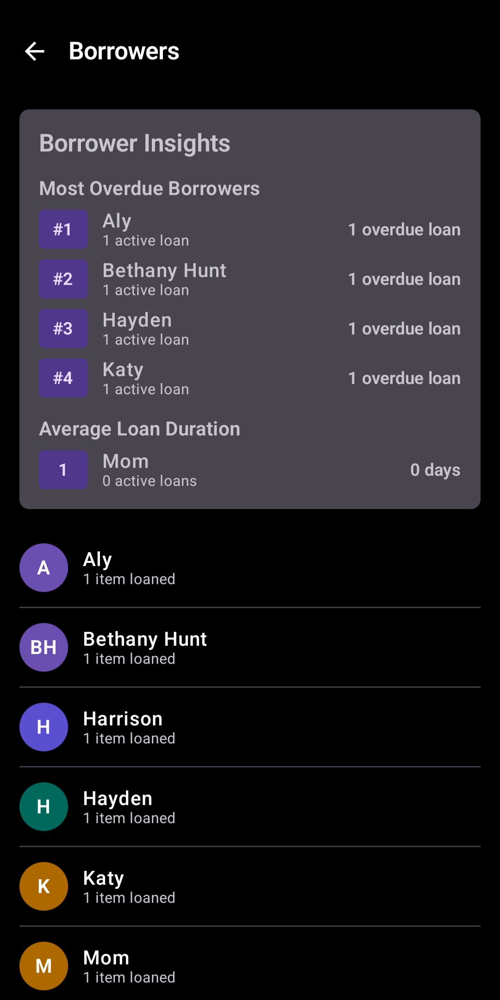

01
Name the thing
Type enough to recognize it later. Add a photo when the exact object or included pieces matter.
Know who has what, and when it should come home.
Books. Tools. Games. Equipment. The things you lend do not need a full inventory system. They need a quick record at the moment they leave your hands.
Free core lending tracker. Optional one-time Pro upgrade. No account. No ads.


A lending system fails when recording the loan becomes a project. Loan It keeps the handoff small enough to do while the item is actually changing hands.
Type enough to recognize it later. Add a photo when the exact object or included pieces matter.
Enter a borrower manually or select one through Android's contact picker without handing the app your entire address book.
Then forget about the record until you need it. Search, filter, mark it returned, or let Pro remind you before it is due.

A tool with a battery and charger. A game with several pieces. A kit whose contents you will not remember three months from now. Attach the picture to the loan instead of trying to write an inventory.
How to photograph what you lend →
The point is not to maintain a beautiful database. The point is to answer the annoying questions that show up after the handoff.
Search item descriptions and borrower names instead of scrolling through every loan.
See overdue, due soon, outstanding, returned, or all loans. Sort by recent loans, due date, or borrower.
Close the loop from the loan list, borrower view, or details screen, with Undo if you tap by mistake.
Open a person to see what they currently have and the lending history you share with them.
Export CSV or JSON for your own backups, spreadsheets, or record-keeping outside the app.
Loan It Pro can notify you before an item is due, with the lead time you choose.
For books, scan an ISBN barcode and Loan It can fill in available metadata from Open Library, including title, author, publisher, publication date, page count, and ISBN.
How ISBN scanning works →

Loan It keeps borrower history close to the current loan list. That makes it useful for the ordinary version of lending: friends, family, coworkers, neighbors, classrooms, clubs, and small shared collections.
A practical way to track borrowed tools →Loan records and photos are stored locally in the app's private storage. The app has no ads and no third-party analytics or tracking.
Read the privacy policy →The core tracker is free. Pro is a one-time purchase for heavier use, reminders, restore tools, and deeper borrower insights.
Enough for ordinary personal lending without a subscription.
For people managing more photos, more books, due dates, and longer histories.
Loan It grew out of a simple idea: record only enough structure to answer the questions you will actually ask later.
Loan It gives you a small, private answer to a surprisingly persistent question: who has my stuff?